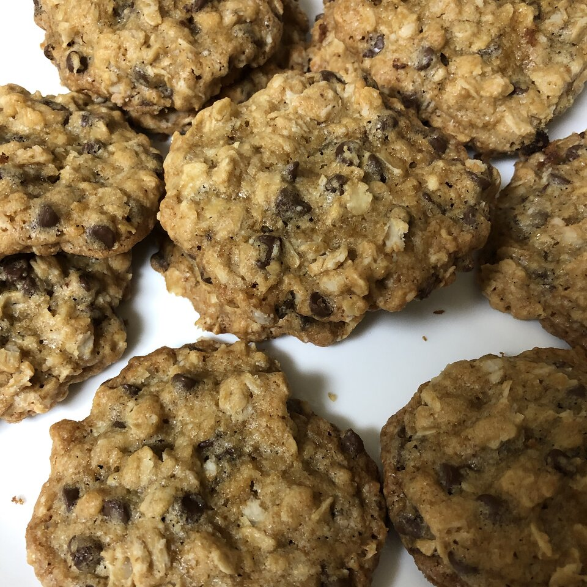

Chewy Chocolate Chip Oatmeal Cookies

A chocolate chip cookie is a drop cookie that features
chocolate chips or chocolate morsels as its distinguishing ingredient.
Chocolate chip cookies originated in the United States around 1938,
when Ruth Graves Wakefield chopped up a Nestlé semi-sweet chocolate bar
and added the chopped chocolate to a cookie recipe.
Ingredient
- 1 cup butter, softened
- 1 cup packed light brown sugar
- 1/2 cup white sugar
- 2 eggs
- 2 teaspoons vanilla extract
- 1 1/4 cups all-purpose flour
- 1 teaspoon salt
- 3 cups quick-cooking oats
- 1 cup chopped walnuts
- 1 cup semisweet chocoalte chips
Directions
- Preheat the oven to 325 degrees F (165 degrees C)
- In a large bowl, cream together the butter, brown sugar,
and white sugar until smooth. Beat in eggs one at a time, then stir in
vanilla. Combine the flour, baking soda, and salt; stir into the creamed
mixture until just blended. Mix in the quick oats, walnuts, and chocolate
chips. Drop by heaping spoonfuls onto ungreased baking sheets.
- Bake for 12 minutes in the preheated oven. Allow cooies to cool on baking
sheet for 5 minutes before transferring to a wire rack to cool completely.
Nutrition Facts
Per Servings: 145 calories; protein 2.1g; carbohydrates 17.2g; fat 8.1g;
cholestral 20.5mg; sodium 107.2ml.